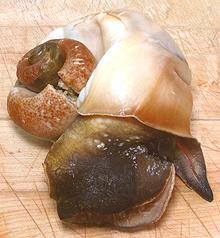
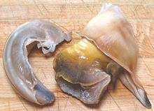
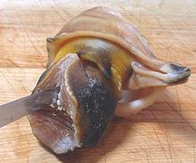
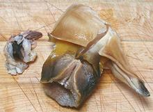
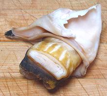

This large, heavy shelled whelk is native to the east coast of North America, from Cape Cod, Massachusetts, south to northern Florida. It feeds on clams, mussels and oysters, which it pries open with the edge of its shell, which tends to be a bit chipped. Once the clam is slightly opened, the whelk extends it's mouth into the shell. It then shreds the victim alive with it's rasp like radula, and digests it. These whelks are preyed upon by crabs. and starfish. They can grow to 12 inches long, but the larger one in the photo was 7-3/4 inches and weighed 2 pounds.
The one to the right shows an edge of the foot with attached hard operculum, which acts as a door, closing off the aperture when the snail feels threatened and retreats into its shell.
More on Culinary Snails.
|





|
Buying:The photo specimens were purchased at a large Asian market in Los Angeles (San Gabriel) for 2016 US $3.99 /p pound. They are usually labeled "Conch", which they are not. This is not a snail that's normally in stock, it's strictly a "buy it when you see it" item.Yield:Three whelks weighing 4 pound 13 ounces yielded 16 ounces of edible flesh (21%). At $3.99 per pound, that comes to $19.18 per pound of edible flesh.Cleaning:These whelks are cleaned about the same as other whelks, differing mainly in size - these are usually quite a bit larger.
Note: if everything didn't pull out of the shell but you want to keep the shell, that stuff won't come out easily, and it will be smelly for a while. If you can find a convenient ant hill, place the shells near it and let the ants clean it out. |